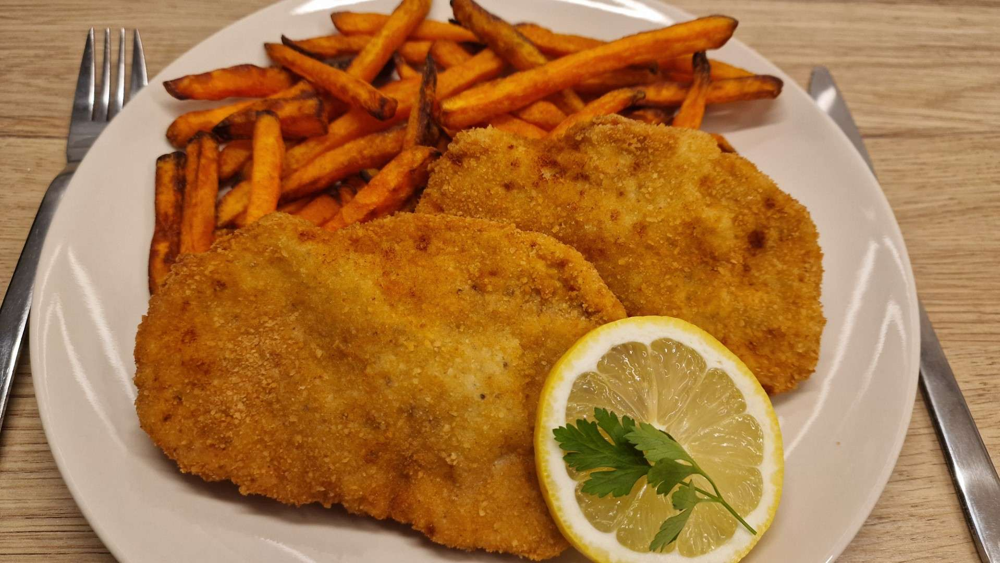

Rántott hús

A tökéletes rántott hús
Hozzávalók
- 20 dkg sertés rövidkaraj (2 szelet)
- 3 ek finomliszt
- 3 ek zsemlemorzsa
- 1 db tojás
- só ízlés szerint
- bors ízlés szerint
- 1 dl napraforgó olaj
Elkészítés
- A sertéskarajokat megmossuk, konyhakész állapotba hozzuk és kiklopfoljuk.
- A sertéskarajokat ízlés szerint sózzuk, borsozzuk, esetleg más fűszerrel is fűszerezhetjük.
- Egy edénybe lisztet, egy másikba egy elkevert tojást, a harmadikba pedig zsemlemorzsát teszünk.
- A szeleteket először a lisztbe forgatjuk bele. Kicsit lerázzuk, majd beletesszük a tojásba. Ha mindenhol
befedte a tojás, akkor a zsemlemorzsába is beleforgatjuk.
- Ha végeztünk a húsokkal, akkor forró olajban, közepes lángon minkét oldalukat megsütjük, és
papírtörlővel
fedett tányérra helyezzük őket.
Home